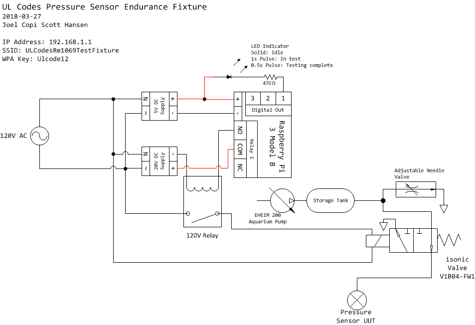

IEC Pressure Endurance Test fixture
Usage Instructions
Basic usage of the IEC Pressure Endurance Test fixture can be accomplished through the following steps:

Figure 1: Front face of test fixture

Figure 2: Back face of test fixture
LED (F1) Behavior | State |
Solid | Idle |
1s Pulse | In Test |
0.25s Pulse | Test Completed |
Figure 3: Led Status Light Behavior
- Plug the fixture in and switch the main power switch (F2) to “ON”
- Attach the unit under test to the air hose (B2) on the back of the fixture. Pressure at the UUT can be adjusted using the needle valve (B1) at the back of the fixture.
- When the blue status LED (F1) turns on connect a computer to the “ULCodesRm1069TestFixture” wireless network, providing the WPA key “Ulcode12”.
- Once connected open a web browser and navigate to http://192.168.1.1. A page resembling the image below should be loaded. This page provides information on the current software (W2), hardware components (W3), and a combined electrical and pneumatic diagram (W4).
- Navigate to the test control page by clicking the “Start Pressure Endurance Test” button (W1) at the top of the page. A page will load with two sections “Settings” and “Status”. The sections can be expanded and collapsed as shown above.
- To set up a test enter an “On Time”, “Off Time”, and “Number of Cycles” then click “Start”. After the test is started the status section will show a progress bar for total progress and relay on/off times, A percentage completed and ETA for completion is also shown. Cycles will also be counted on the onboard calibrated counter (F3) and timing can be verified by a calibrated oscilloscope through the ports on the the rear (B3). (B3) ports are connected the same electrical signals that drive the calibrated counter/air solenoid.
- Clicking the “Relay On” and “Relay Off” will allow testing the pressure of the system at both applicable levels without initiating a test. The fixture is capable of generating pressures from 344.7Pa (0.05 PSI, 35.15mm H2O) to 7460.1Pa (1.08 PSI, 760.7mm H2O).

Joel Copi
2018-03-28
IEC Pressure Endurance Fixture Instructions
https://docs.google.com/document/d/1qHv5wzGMFVwkwP_ZgDbFlKMmGxwwpHwfQGNcjx3DSA4/edit?usp=sharing